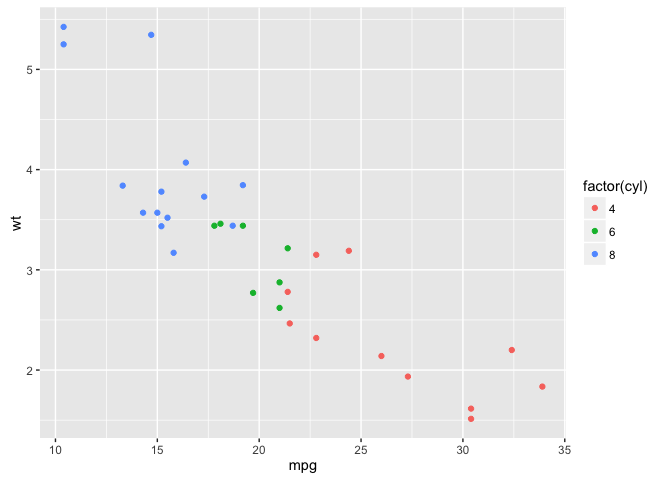

Intro to ggplot2
Matt O’Donnell
February 5, 2016
0.1 ggplot2 - The Grammar of Graphics
library(ggplot2)ggplot2 is an implementation of the Grammar of Graphics theory and method of data visualization that builds up plots through layers and components. Data is mapped to particular aesthetics, i.e. which variable in your data set should be mpapped to which element of a plot (e.g. the X and Y axis or a grouping element, such as different lines, colored bars or panels).
Having your data in a data frame is the most natural and straight forward representation for using ggplot2.
0.1.0.1 This is a wide data frame
df_wide <- data.frame(
id = paste('p', 1:5, sep=''),
var1 = sample(1:100, 5),
var2 = sample(500:1000, 5),
var3 = sample(1000:10000,5),
var4 = c('A','A','B','C','C')
)
df_wide## id var1 var2 var3 var4
## 1 p1 13 554 3168 A
## 2 p2 10 596 7372 A
## 3 p3 31 513 3487 B
## 4 p4 73 818 6156 C
## 5 p5 85 502 8190 C0.2 Simple Example: Scatter plot
ggplot(df_wide, aes(x=var1, y=var2)) + geom_point()
0.3 The components of a ggplot
0.3.1 ggplot() function
ggplot()is the main function required in every plot and is usually where you specify the data frame you are plotting and specify the mapping from data to plot element using theaes(aesthetics) function.
You can build up the layers of a plot by assigning the result of the ggplot function to a variable and then adding layers. The following sets up the plot by specifying the data frame and the aesthetics, i.e. which variable should go to which axis in the plot. But it doesn’t plot anything.
p <- ggplot(df_wide, aes(x=var1, y=var2))0.3.2 A geom function
Plots require a geom function to display the data. Examples include:
geom_point()- a scatter plotgeom_histogram()- a histogramgeom_density()- a density plotgeom_bar()- a bar chartgeom_boxplot()- a box plotgeom_line()- a line plotgeom_path()- a point to point path line plot (useful for geolocation data etc)geom_text()- a scatter plot with labels instead of points
0.3.2.1 A scatter plot of var1 (x) against var2 (y)
p + geom_point()
0.3.2.2 A line plot connecting x,y points
p + geom_line()
0.3.2.3 A path line plot connecting x,y points in order
df_wide## id var1 var2 var3 var4
## 1 p1 13 554 3168 A
## 2 p2 10 596 7372 A
## 3 p3 31 513 3487 B
## 4 p4 73 818 6156 C
## 5 p5 85 502 8190 Cp + geom_path()
If we reorder the data frame the plot will look different.
df2_wide2 <- df_wide[order(df_wide$var1,df_wide$var2),]
p <- ggplot(df2_wide2, aes(x=var1, y=var2))
p + geom_path()
0.3.2.4 A bar graph counting the number of items in each group (var4)
p <- ggplot(df_wide, aes(var4))
p + geom_bar()
0.3.2.5 A boxplot
p <- ggplot(df_wide, aes(x=var4, y=var1))
p + geom_boxplot()
You can add aesthetic mappings to the geom function as well to control specific features of the the plot, e.g. the fill color of each boxplot or bar
p + geom_boxplot(aes(fill=var4))
p <- ggplot(df_wide, aes(var4))
p + geom_bar(aes(fill=var4))
0.3.3 Graph labels
xlab()- specify label for x axisylab()- specify label for y axisggtitle()- specify title for graph and legendslabs()- set all of the above with parameters in one function
p <- ggplot(mtcars, aes(x=wt, y=mpg))
p + geom_point() +
xlab('Miles per gallon') +
ylab('Weight') +
ggtitle('Car weight to fuel efficiency')
is equivalent to
p + geom_point() +
labs(x='Miles per gallon',
y='Weight',
title='Car weight to fuel efficiency')
0.3.4 Adding additional aesthetics
If you have more than two variables you want to represent you can make use of other graphic features such as:
- shape of points
- color of points
- size of points
These can be added as aesthetics to the specific geom function, e.g. to geom_point for a scatter plot, by including a aes function
# 1. set up the main mapping from data to x and y axes
p <- ggplot(mtcars, aes(x=mpg, y=wt))
# 2. set up a mapping with the color of points and the number of cylinders (needs to be treated as a factor not an numeric using factor())
p + geom_point(aes(colour=factor(cyl)))
# 3. add a fourth dimension for the displacement variable using point size
p + geom_point(aes(colour=factor(cyl), size=disp))
# 4. add in nicer labels for title, axes and legends
p + geom_point(aes(colour=factor(cyl), size=disp)) +
ggtitle('Car relationship between weight and fuel efficency') +
xlab('Car weight') +
ylab('Miles per gallon') +
ggtitle(aes(colour='Cylinders',
size='Displacement'))
0.3.5 Adding lines to a plot
geom_hlinegeom_vlinegeom_abline
ggplot(mtcars, aes(cyl,wt)) + stat_summary(fun.y=mean, geom='bar', aes(fill=factor(cyl))) + stat_summary(fun.data=mean_cl_boot, geom='errorbar', width=0.2)## Warning: replacing previous import by 'ggplot2::unit' when loading 'Hmisc'## Warning: replacing previous import by 'ggplot2::arrow' when loading 'Hmisc'## Warning: replacing previous import by 'scales::alpha' when loading 'Hmisc'